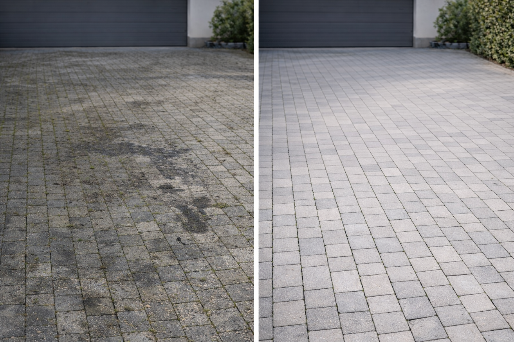
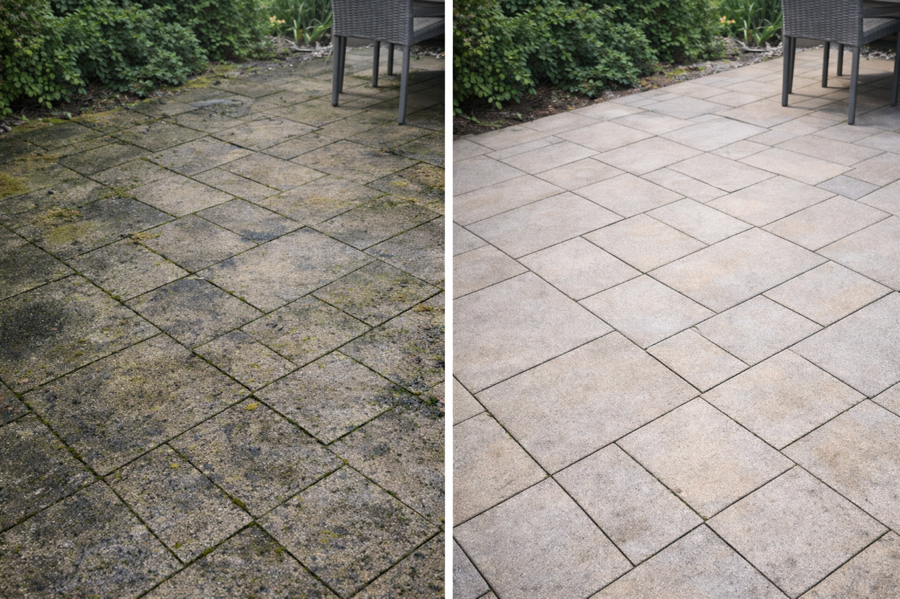
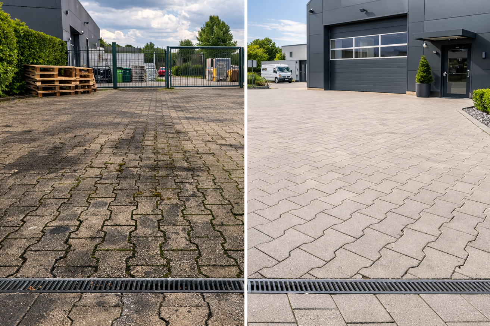
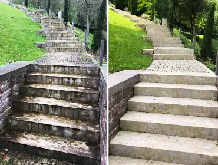
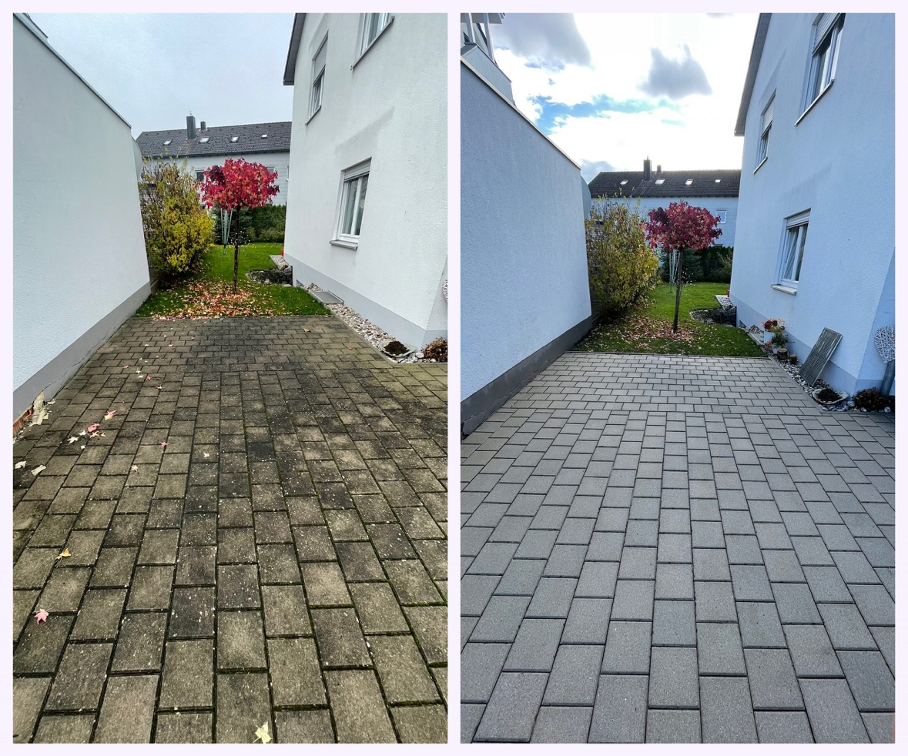
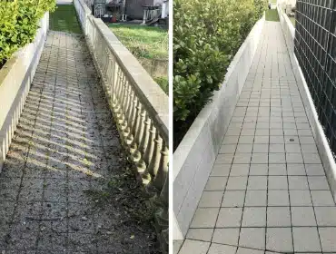
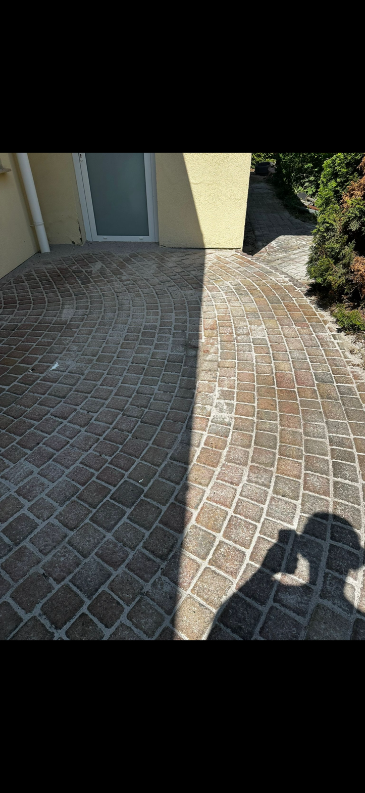
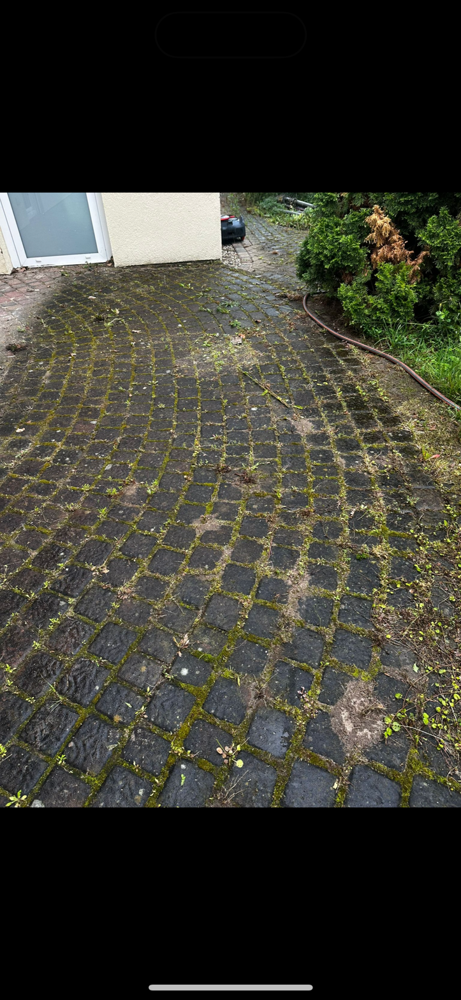

💦 Hochdruck · Fugensand · Nano-Imprägnierung
Steinreinigung
Einfahrten, Terrassen und Gewerbeflächen – professionell gereinigt, versiegelt, langlebig. Angebot noch am selben Tag.
Einfahrten, Terrassen und Gewerbeflächen – professionell gereinigt, versiegelt, langlebig. Angebot noch am selben Tag.

Pflastersteine, Betonplatten, Naturstein – nach Jahren sehen Einfahrten und Terrassen grau, bemooset und schmutzig aus. Unser 4-Schritte-Verfahren bringt sie zurück auf Vordermann.
Hochdruckreinigung mit Flächenaufsatz, direktes Absaugen, Fugensand auffüllen, Nano-Imprägnierung – alles in einem Termin, kein Nacharbeiten für Sie.
Eigenheim-Einfahrten, Terrassen, Firmenparkplätze, Betriebsgelände – wir reinigen alle Steinflächen.
Jeder Auftrag folgt demselben gründlichen Verfahren – für ein Ergebnis, das lange hält.

Mit Flächenreiniger und Hochdruckreiniger werden Schmutz, Moos und Algen gründlich von der Oberfläche und aus den Fugen gelöst – ohne Sprühnebel auf Autos oder Fassaden.

Der gelöste Schlamm und Schmutz aus den Fugen wird direkt abgesaugt und abtransportiert – die Fläche bleibt sauber, die Nachbarschaft trocken.

Spezieller Fugensand wird auf die gereinigte Fläche aufgetragen und in die Fugen eingebürstet – für stabile Fugen, kein Unkraut, kein Absinken der Steine.

Die Nano-Versiegelung schützt die gereinigte Fläche dauerhaft – Schmutz, Wasser und Öl perlen ab. Das nächste Reinigungsintervall rückt weit in die Zukunft.


Pflastersteine gereinigt & versiegelt


Naturstein gereinigt & versiegelt


Großfläche gereinigt & versiegelt




Flächenaufsatz mit Absaugung – Autos, Fassaden und Nachbarn bleiben sauber.
Fugen werden nach der Reinigung aufgefüllt – stabil, unkrautfrei, sauber.
Schmutz perlt ab, die Fläche bleibt länger sauber – typischerweise 2–4 Jahre.
Foto per WhatsApp – Angebot noch am selben Tag